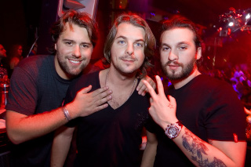

Gli Swedish House Mafia sono un gruppo musicale house svedese composto dai DJ e produttori Axwell, Steve Angello e Sebastian Ingrosso.
Il gruppo fece il suo debutto nel 2007 pubblicando il singolo Get Dumb in collaborazione con Laidback Luke, una collaborazione che culminò nel 2009 con il singolo Leave the World Behind.
Gli Swedish House Mafia divennero popolari con la pubblicazione del loro primo vero singolo come gruppo One (Your Name) nel 2010, in collaborazione con il rapper Pharrel Williams. Negli anni successivi, divennero uno dei gruppi più influenti della scena EDM con singoli come Miami 2 Ibiza, Save the World (Tonight) Don't You Worry Child e Greyhound che ebbero un successo mondiale.
Il gruppo si sciolse ufficialmente nel 2013, ma ci furono diverse reunion negli anni successivi, fino a quella definitiva nel Dicembre 2019. Nel 2021 pubblicarono un nuovo singolo intitolato It Gets Better riscuotendo però relativamente poco successo per via del notevole cambio di stile poco apprezzato dai fan.
Nel 2022 e 2023 il gruppo raggiunse di nuovo il successo internazionale con i singoli Turn On the Lights again..., See the Light e Ray of Solar, i primi due con uno stile più commerciale, l'ultimo invece parte del "revival" trance del 2023 e decisamente più apprezzato dai fan.
